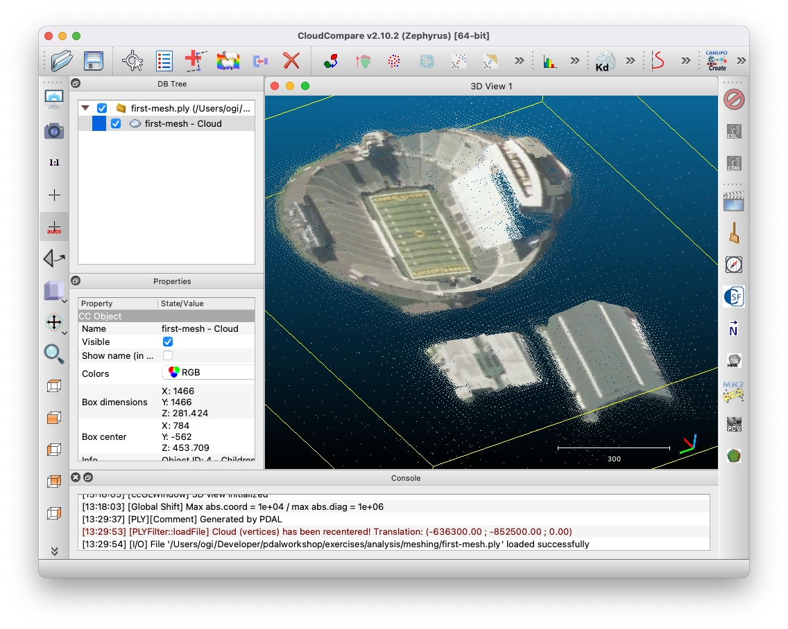

Creating surface meshes
This exercise uses PDAL to create surface meshes. PDAL is able to use a number of meshing filters: https://pdal.io/stages/filters.html#mesh. Three of these are ‘in the box’, without needing plugins compiled. These are 2D Delaunay triangulation, Greedy projection meshing and Poisson surface meshing.
In this exercise we’ll create a Poisson surface mesh - a watertight isosurface - from our input point cloud.
Exercise
We will create mesh models of a building and its surrounds using an entwine data input source.
After running each command, the output .ply file can be viewed in Meshlab or CloudCompare.
See also
PDAL implements Mischa Kazhdan’s Poisson surface reconstruction algorithm. For details see [Kazhdan2006]_
Note
This example will be using the output of using Clipping data with polygons
exercise, specifically using stadium.las file. Please produce that
file by following that exercise before starting this one.
Note
writers.ply will write out mesh vertices by default. In this exercise we set the attribute faces=”true”. Try using the ply writer without it. Also, if you’re using a machine with a lot of processing power, try increasing the depth parameter for a more detailed mesh.
Mesh Command
Invoke the following command, substituting accordingly, in your Conda Shell:
$ pdal translate -i ./exercises/analysis/clipping/stadium.las \
-o ./exercises/analysis/meshing/first-mesh.ply \
poisson --filters.poisson.depth=16 \
--verbose 4
> pdal translate -i ./exercises/analysis/clipping/stadium.las ^
-o ./exercises/analysis/meshing/first-mesh.ply ^
poisson --filters.poisson.depth=16 ^
--verbose 4
(PDAL Debug) Debugging...
(pdal translate Debug) Executing pipeline in standard mode.
(pdal translate filters.poisson Debug) Computing normal vectors
You can view the mesh in Cloud Compare, you should see something similar to
{kind=link}
Filtering
If we want to just mesh a building, or just terrain, or both we can apply a range filter based on point classification. These data have ground labeled as class 2, and buildings as 6.
In this exercise we will create a poisson mesh surface of a building and the ground surrounding it, using the same data subset as above and adding a filters.range stage to limit the set of points used in mesh creation.
Command
Invoke the following command, substituting accordingly, in your Conda Shell:
$ pdal translate -i ./exercises/analysis/clipping/stadium.las \
-o ./exercises/analysis/meshing/building-exercise.ply \
range poisson \
--filters.range.limits="Classification[2:2],Classification[6:6]" \
--filters.poisson.depth=16 \
--verbose 4
> pdal translate -i ept://http://act-2015-rgb.s3.amazonaws.com ^
-o ./exercises/analysis/meshing/building-exercise.ply ^
range poisson ^
--filters.range.limits="Classification[2:2],Classification[6:6]" ^
--filters.poisson.depth=16 ^
--verbose 4
(PDAL Debug) Debugging...
(pdal translate Debug) Executing pipeline in standard mode.
(pdal translate filters.poisson Debug) Computing normal vectors